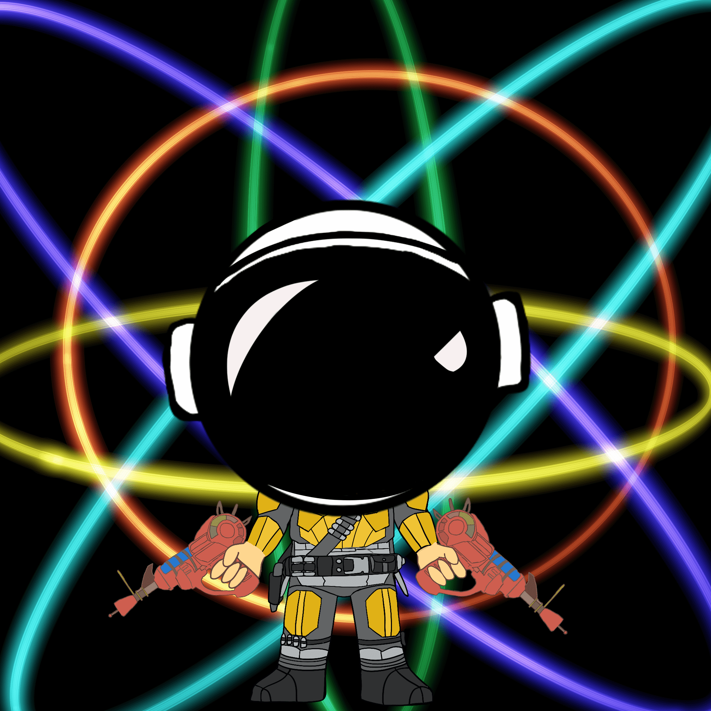 Wei Pop 4269 Wei pop Nfts 授予访问 Wei 战士游戏、赠品和抽奖的权限。 Wei pop 是来自 Wei 战士社区的免费薄荷糖。Wei Pop NFT - 常见问题（FAQ） ▶ 什么是微流行？ Wei Pop 是一个 NF
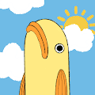 WeinerFish 2800条维纳鱼生活在区块链上！为元界和 web3.0 构建资产 为什么鱼会在学校游泳？加入我们的不和谐以找出答案。Weiner Fish NFT - 常见问题（FAQ） ▶ 什
WeMint Washington Meta Reserve 是在以太坊区块链上发现的特殊货币艺术的集合。以太坊是具有智能合约功能的去中心化开源区块链。该艺术品可作为不可替代令牌 (NFT) 使用，这是一种存储
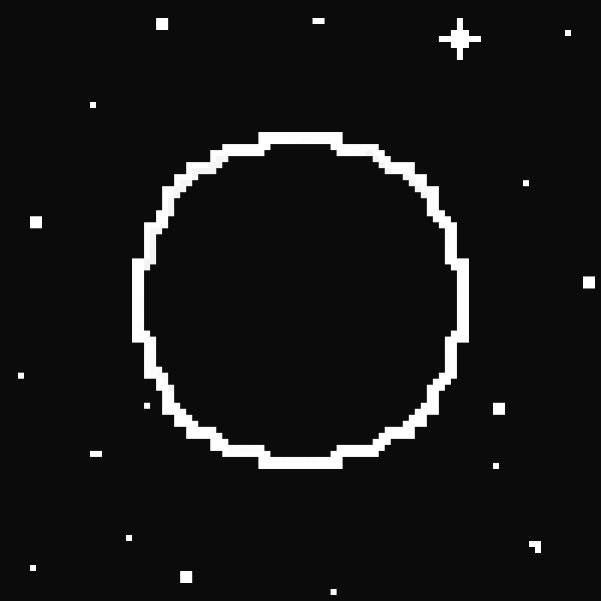 Wen Moon? Official 10,000 个手工制作的 PFP 的集合。地球资源已经枯竭。人类不断地消耗和破坏。人类正处于崩溃的边缘，研究表明，如果条件改变，月球可能适合居住。现在是人类登
Wen Raffle Ser NFT Wen Raffle Ser NFT 统计 创建于 4 个月前，426代币供应，5% 费用 过去 7 天没有售出 Wen Raffle Ser NFT。 Wen Raffle Ser NFT NFT - 常见问题（FAQ） ▶ 什么是 Wen Raffle Ser NFT？ Wen Raffle Ser
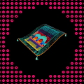 Wen Rug Pull 专为您打造的地毯 Rug Pull 团队在创建了 6969 块在以太坊区块链上铸造的手绘地毯供您添加到您的收藏后，对该项目寄予厚望。 Rug Pull 团队在一段充满激情的旅程中找到
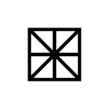 WENEW presents Andy Murray's Wimbledon 2013 Victory WENEW 的首个系列记录了这位网球传奇人物在 2013 年温布尔登网球公开赛上的胜利，这不仅结束了英国 77 年对本土绅士单打冠军的等待，而且也将他变成了民族英雄。
Wenurs Wenurs NFT - 常见问题（FAQ） ▶ 什么是温努尔？ Wenurs 是一个 NFT（不可替代代币）集合。存储在区块链上的数字艺术品集合。 ▶ 有多少个 Wenurs 代币？ 总共有 4,051 个 Wenurs N
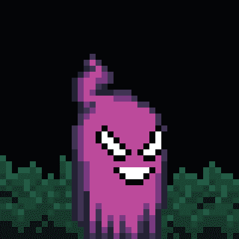 WeSeeGhosts Genesis Collection 从 1,111 个幽灵中召唤，每一个都比上一个更独特。捍卫光明或主宰该死的人，但要明智地选择——因为对齐不是一件小事。我们看到鬼魂……无处不在！我们需要
WGMI Industries Genesis 起源故事 WGMI Industries 的创建旨在打造一个优质的 Web3 品牌，旨在创造真实世界的实用工具——真实的公司、真实的人、真实的产品。我们的四大支柱将专注于时尚品牌、
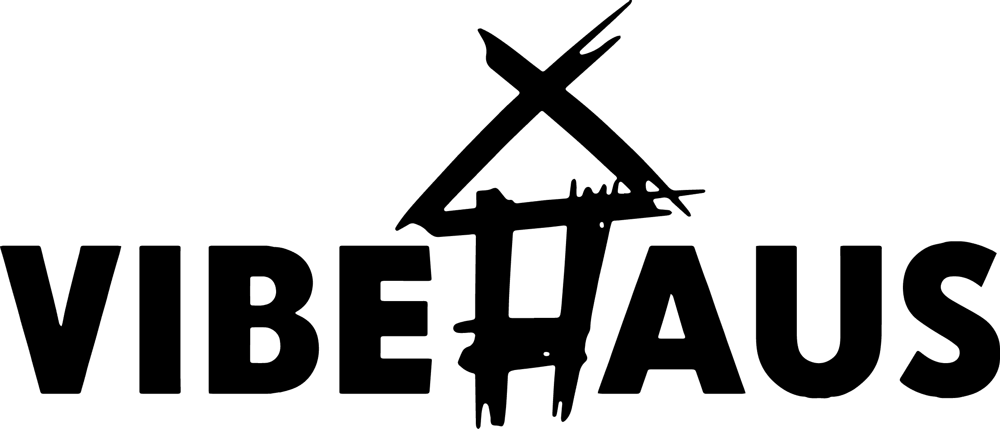 WhenAliensMeet WhenAliensMeet 统计 创建于 2 个月前 25代币供应，10% 费用 WhenAliensMeet NFT 在过去 7 天内售出 2 次。WhenAliensMeet 的总销售额为 243.71 美元。WhenAliensM
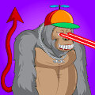 Where Lambo Ape Club OFFICIAL WHERE LAMBO APE CLUB 集合了 3,333 只富有和影响力的猿类。他们在短时间内获得了巨大的加密收益。现在他们享受生活，喜欢驾驶兰博基尼汽车。 WLAC是 3300个有影响
Whethan V2 Whathan V2 统计 创建于 4 个月前 50 代币供应，10% 费用 过去 7 天没有售出 Whethan V2。 由 Whethan on Sound 创建。在https://www.sound.xyz/whetha
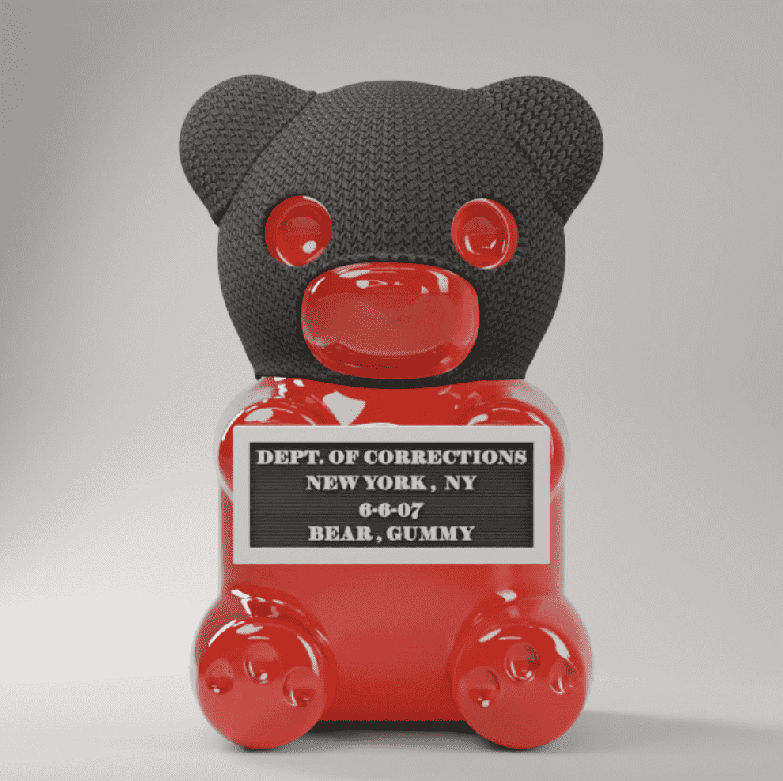 WhIsBe Vandalz 加入我们的 WhIsBeVerse 之旅，这是一个以艺术为导向、以社区为中心的项目，以协作和联系为中心。每个 Vandal 都允许您访问仅限 Vandal 持有者的数字活动、IRL 活动、独家商
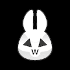 White Rabbit - ZERO 跟着大白兔走下 web3 的兔子洞！ 当我们通过一系列专注于艺术、文化、游戏和体验的项目在 web3 中探索和创新时，白兔是您在 GATE 生态系统中的向导。 白兔的持有者可
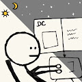 Whitelistmfers 白名单提供者统计 创建于 6 个月前 407代币供应，5% 费用 过去 7 天内没有售出白名单。 Whitelistmfers 是一个收藏 nft 项目，灵感来自 mfers 和白名单剧。持有whiteli
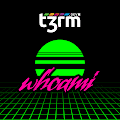 whoami (t3rm.dev) whoami (t3rm.dev) more_horiz t3rm.dev 平台的精英收藏身份，共有 1,337 个第 0 代 whoami 代币。每个手柄都是独一无二的。属性包括：头衔、兴趣、服装、装备、安全、软件、交通工具和武器。你是
Wicked Ape Bone Club Polygon 恶猿骨头俱乐部 10,000 只骨骼猿作为 ERC-721 不可替代代币生活在以太坊区块链上。通过拥有一只猿，您将自动获得 10 美元 WCKD 实用代币，可在整个 Wicked Bone Club 生态系统中使用。
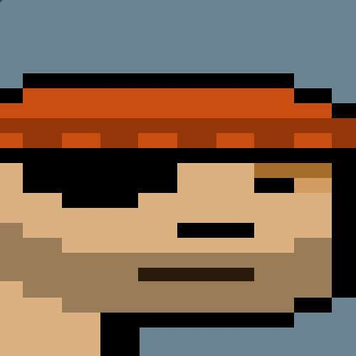 Wiiides Wiiides 在钱包之间出售或转移时会变宽。Wiiides 是 Sterling Crispin 的实验性智能合约和概念艺术品，与 Yuga Labs 或 Larva Labs 没有任何隶属关系。 Wiiides 是完全上链的艺术品，这意味
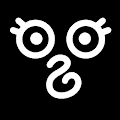 WIILLOWMAL WIILLOWMAL统计 拥有者 [NULL_STUDIO] 能见度：9 次观看 最喜欢的5 个最爱 你好！ 在 Willowmer，您不仅可以遇到我们最喜欢的动物，还可以遇到来自传
WikiToken 维基令牌 回馈维基媒体的 NFT。 我们绝不隶属于维基媒体；我们只是试图通过出售代币化 NFT 将资金分配给他们。每次二次销售的 10% 被发送到 wikitoken.eth 国库，代币可以
Wild Abduction Game Invitation 牛仔们好！如果您收到此信息，则表示您已自动解锁 WL 价格以参与狂野西部之战！ 野生绑架游戏邀请 NFT - 常见问题（FAQ） ▶ 什么是狂野绑架游戏邀请？ Wild Abduction
Wild EXOplanet Game Wild EXOplanet 是一款具有 P2E 机制的创新 AAA 区块链在线游戏，它邀请玩家在危险的系外行星上扮演太空定居者的角色。该系列包含 9999 个独特的 NFT，它们为其所有者提供
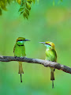 Wild Scapes 野生景观统计 创建于 8 个月前，6 代币供应，10% 费用 过去 7 天没有售出 Wild Scapes。 该集合包含通过 ERC 1155 智能合约铸造的所有野生景观。 Wild Scapes NFT - 常见
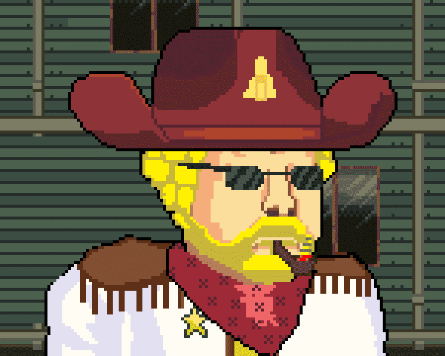 Wild West Official 狂野西部 #5017 拥有者 [大胆的辣妹] 能见度：11 次观看 最喜欢的1 个最爱 日程：销售将于 2022 年 9 月 9 日凌晨 4:02 GMT+8结束 你得到了靴子。你拿到了帽子。你
WindowsXD Genesis Wallpapers WindowsXD 创世纪壁纸统计 创建于 2 个月前，1,000 代币供应，7.5% 费用 WindowsXD Genesis 壁纸 NFT 在过去 7 天内售出 41 次。WindowsXD Genesis 壁纸的总销售额为 175.1 美元。
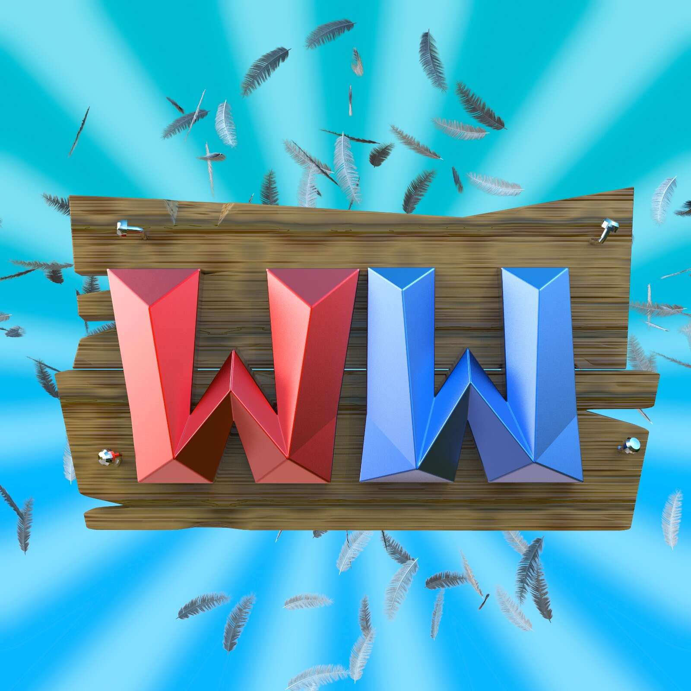 Wing Wars 翼战统计 创建于 3 个月前，5,000 代币供应，10% 费用 Wing Wars NFT 在过去 7 天内售出 5 次。Wing Wars 的总销售额为 3.17 美元。Wing Wars NFT 的平均价格为 0.6 美
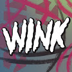 WINK Collection 1 OF 1 WINK 收集 1 OF 1 统计数据 创建于 4 个月前，3 代币供应，2.5% 费用 过去 7 天内没有售出 WINK Collection 1 OF 1。 John Arayi 制作的第一个 NFT 集合，未来会有很多有趣的特征。 我
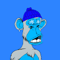 Winter Apes NFT 冬猿 NFT 统计 创建于 9 个月前，1,443 代币供应，10% 费用 过去 7 天没有出售 Winter Apes NFT。 以太坊区块链上有 2,500 只独特的冬日猿。 所有版税的 100% 将用于赠品
WIP Publishing Genesis NFTBooks WIP Publishing Genesis NFTBooks 统计 创建于 1 年多前，12 代币供应，10% 费用 过去 7 天内未售出 WIP Publishing Genesis NFTBooks。 此集合包含 WIP Publishing 的 Genesis NFTBooks 的初始运行。每个 Genesis #NFTBook 中只有 100
WIP Publishing Genesis NFTBooks V2 准备好加入革命了吗？史诗。 我们是一个由作家、书籍爱好者和 NFT 收藏家组成的社区，他们围绕着推动创意写作的使命而聚集。 我们的第一个概念是 NFTBook Gene
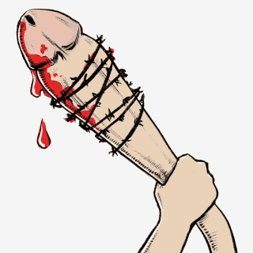 Wish I Had The Same 希望我有相同的统计数据 创建于 2 个月前，5,000 代币供应，10% 费用 希望我有相同的 NFT 在过去 7 天内售出 19 次。Wish I Had The Same 的总销售额为 13.39 美元
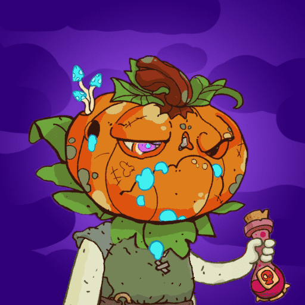 WITCHESxyz WITCHESxyz 统计 创建于大约 2 个月前，5,000 代币供应，7.5% 费用 WITCHESxyz NFT 在过去 7 天内售出 128 次。WITCHESxyz 的总销售额为 671.94 美元。一个 WITCHESxyz NFT 的平均价
Wives Okay Bears 妻子还好熊统计 创建于 4 个月前，9,981 代币供应，5% 费用 过去 7 天没有售出 Wies Okay Bears。 Wives Okay Bears 是一种文化转变。 这是一组令人惊叹的女性熊，她
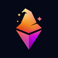 Wizard Pass Official 独家收藏 2997 张巫师通行证。每个向导通行证都可以让您进入世界上最好的 NFT 交易社区。Hot Alpha、尖端 NFT 交易工具、白名单机会、自动日历和警报等等
Wizard Treasure Collective 什么是巫师宝藏集体？ WTC 是一个 DAO，它从最新的独家发行中购买和细分 NFT。 想想 Kaiju Kings、Doodles、Mutant Cats 等。然后这些分数以
WIZARDRY - BY ALEKSTHEWIZARD 巫师 - 由 ALEKSTHEWIZARD AleksTheWizard 的数字探索合集。 “Wizardry”系列是我进入数字艺术世界的第一步，并将作为未来系列的起源系列。 您的支持使我能够追求我最喜欢做
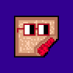 WizardsNouns WizardsNouns 统计 创建于 9 个月前 1,185 代币供应 7.5% 费用 WizardsNouns NFT 在过去 7 天内售出 2 次。 WizardsNouns 的总销售额为 74.65 美元。 一个 WizardsNouns NFT 的平均价格为 37.3 美元。 有 908 位 WizardsNouns 所有者，总共拥有 1,185 个
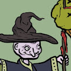 Wizardtown.wtf WizardTown.wtf 官方统计 创建于 3 个月前，1,000 代币供应，5% 费用 WizardTown.wtf 官方 NFT 在过去 7 天内售出 38 次。WizardTown.wtf Official 的总销售额为 1.61 万美元。一个
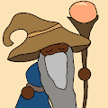 Wizardtown.xyz 巫师城.xyz 统计 创建于 3 个月前，3,333 代币供应，8% 费用 过去 7 天没有出售 Wizardtown.xyz。 巫师镇是一个隐藏在乌夫之地山脉中
WizardX Mint WizardX Mint 统计数据 创建于 2 年前，143代币供应，7.5% 费用 过去 7 天内没有售出 WizardX Mint。 WizardX Mint 提供精美的艺术品和收藏品。 通过矢量设计的多阶段工作流
WL METALIVE WL METALIVE 统计 创建于 3 个月前 100 代币供应 10% 费用 WL METALIVE NFT 在过去 7 天内售出 2 次。WL METALIVE 的总销售额为 373.25 美元。一个 WL METALIVE NFT 的平均价格为 186.6 美元。有 15 个 WL METALIVE 所有者，
WMC SAFE WebMasonCoin Safe - 它是 WMC 代币的加密保险箱。 该系列有 20 亿个 WMC（占总供应量的 20%）。 10000个保险箱，每个保险箱200000个WMC，锁5年。您可以